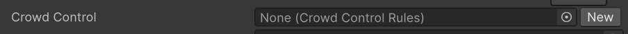
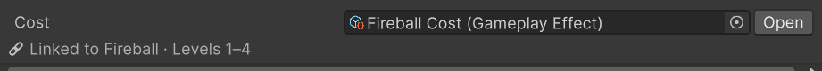

Asset fields
An asset field holds a PlayForge asset, a Value Pipeline, Crowd Control Rules or an Effect Modifier. It's Unity's object field, with a button beside it.

An asset field, with its New button.
| Button | Shown | What it does |
|---|---|---|
| Open | While the field names an asset | Shows the asset in a window of its own, so the asset that holds the field stays in the Inspector. |
| New | While the field is empty | Opens the New Asset window, its name starting as the holder's and the field's, such as "Goblin Attribute Set". Then it makes the asset where The Forge makes its type, and puts it in the field. |
While the Unity project has a Forge Project, the field's picker offers the active project's assets alone, in PlayForge's dropdown.
An effect field's levels
An effect field has a line under it that says how the effect takes its levels.

An effect field, and the line under it that says how the effect takes its levels.
| The line says | Button |
|---|---|
| Linked to the asset that holds the field, with its levels | — |
| Linked to another asset | Link Here |
| Not linked | Link |
Link and Link Here make the effect take the holder's levels, as one Undo step. An effect New makes takes them too.
An effect field's right-click menu
| Item | What it does |
|---|---|
| Copy the Cost Effect Template | On an ability's Cost: makes a copy of the project's Cost Effect named for the ability, such as "Fireball Cost Effect", taking its levels. |
| Use the Cost Effect Template | On an ability's Cost: puts the project's Cost Effect itself in the field. |
| Pick an Unlinked Effect... | A pick of the project's effects that take no asset's levels. |
| New Linked Effect... | Names a new effect in the New Asset window, and makes it take the holder's levels. |
An ability's Cooldown has the same two items for the project's Cooldown Effect.